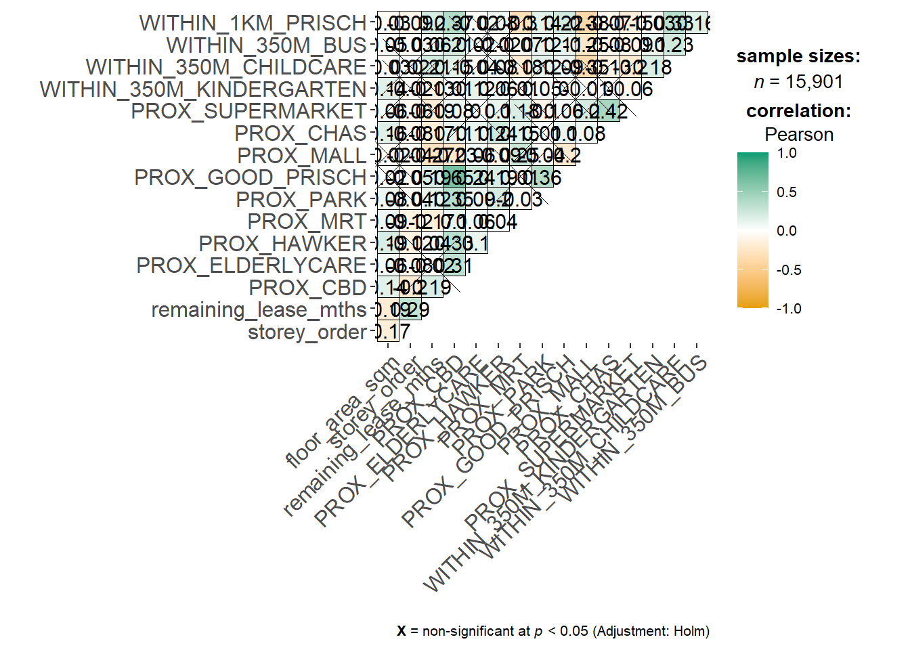

pacman::p_load(sf, spdep, GWmodel, SpatialML,
tmap, rsample, Metrics, tidyverse,
knitr, kableExtra)In Class Exercise 08
mdata <- read_rds("data/mdata.rds")Data Sampling
set.seed(1234)
HDB_sample <- mdata %>%
sample_n(100) # set small for faster computating time, for actual modelling, it should be largeroverlapping_points <- HDB_sample %>%
mutate(overlap = lengths(st_equals(., .)) > 1)HDB_sample <- HDB_sample %>%
st_jitter(amount = 5)set.seed(1234)
resale_split <- initial_split(HDB_sample,
prop = 6.67/10,)
train_data <- training(resale_split)
test_data <- testing(resale_split)Multicollinearity check
In order to avoid multicollineariy. In the code chunk below, ggcorrmat() of ggstatsplot is used to plot a correlation matrix to check if there are pairs of highly correlated independent variables.
mdata_nogeo <- mdata %>%
st_drop_geometry()
ggstatsplot::ggcorrmat(mdata_nogeo[, 2:17])
Building a non-spatial multiple linear regression
price_mlr <- lm(resale_price ~ floor_area_sqm +
storey_order + remaining_lease_mths +
PROX_CBD + PROX_ELDERLYCARE + PROX_HAWKER +
PROX_MRT + PROX_PARK + PROX_MALL +
PROX_SUPERMARKET + WITHIN_350M_KINDERGARTEN +
WITHIN_350M_CHILDCARE + WITHIN_350M_BUS +
WITHIN_1KM_PRISCH,
data=train_data)
olsrr::ols_regress(price_mlr) Model Summary
--------------------------------------------------------------------------
R 0.930 RMSE 50176.478
R-Squared 0.865 MSE 3258172804.064
Adj. R-Squared 0.828 Coef. Var 13.495
Pred R-Squared 0.769 AIC 1647.976
MAE 39005.740 SBC 1683.010
--------------------------------------------------------------------------
RMSE: Root Mean Square Error
MSE: Mean Square Error
MAE: Mean Absolute Error
AIC: Akaike Information Criteria
SBC: Schwarz Bayesian Criteria
ANOVA
--------------------------------------------------------------------------------
Sum of
Squares DF Mean Square F Sig.
--------------------------------------------------------------------------------
Regression 1.06558e+12 14 76112868601.230 23.361 0.0000
Residual 166166813007.259 51 3258172804.064
Total 1.231747e+12 65
--------------------------------------------------------------------------------
Parameter Estimates
------------------------------------------------------------------------------------------------------------------
model Beta Std. Error Std. Beta t Sig lower upper
------------------------------------------------------------------------------------------------------------------
(Intercept) 163031.951 138252.724 1.179 0.244 -114521.975 440585.877
floor_area_sqm 2466.979 1323.166 0.116 1.864 0.068 -189.388 5123.345
storey_order 22360.527 3972.410 0.397 5.629 0.000 14385.582 30335.473
remaining_lease_mths 286.583 57.068 0.344 5.022 0.000 172.015 401.152
PROX_CBD -14435.823 2274.445 -0.499 -6.347 0.000 -19001.962 -9869.684
PROX_ELDERLYCARE -11514.949 11084.052 -0.064 -1.039 0.304 -33767.112 10737.214
PROX_HAWKER 3003.249 20186.947 0.009 0.149 0.882 -37523.738 43530.236
PROX_MRT -15499.764 21678.241 -0.047 -0.715 0.478 -59020.650 28021.121
PROX_PARK -28154.553 18510.719 -0.090 -1.521 0.134 -65316.372 9007.267
PROX_MALL -64609.885 32854.500 -0.133 -1.967 0.055 -130568.046 1348.275
PROX_SUPERMARKET -34853.284 54377.735 -0.040 -0.641 0.524 -144021.142 74314.573
WITHIN_350M_KINDERGARTEN 14323.215 8285.134 0.112 1.729 0.090 -2309.885 30956.316
WITHIN_350M_CHILDCARE -283.524 5246.463 -0.004 -0.054 0.957 -10816.238 10249.189
WITHIN_350M_BUS 554.267 2972.095 0.011 0.186 0.853 -5412.463 6520.998
WITHIN_1KM_PRISCH -15585.342 6547.146 -0.172 -2.380 0.021 -28729.285 -2441.398
------------------------------------------------------------------------------------------------------------------vif <- performance::check_collinearity(price_mlr)
kable(vif,
caption = "Variance Inflation Factor (VIF) Results") %>%
kable_styling(font_size = 18) | Term | VIF | VIF_CI_low | VIF_CI_high | SE_factor | Tolerance | Tolerance_CI_low | Tolerance_CI_high |
|---|---|---|---|---|---|---|---|
| floor_area_sqm | 1.466150 | 1.222173 | 1.978048 | 1.210847 | 0.6820585 | 0.5055489 | 0.8182149 |
| storey_order | 1.879755 | 1.502147 | 2.541320 | 1.371042 | 0.5319841 | 0.3934963 | 0.6657137 |
| remaining_lease_mths | 1.777528 | 1.432098 | 2.399103 | 1.333239 | 0.5625792 | 0.4168224 | 0.6982764 |
| PROX_CBD | 2.334239 | 1.816139 | 3.181239 | 1.527822 | 0.4284051 | 0.3143429 | 0.5506187 |
| PROX_ELDERLYCARE | 1.454152 | 1.214273 | 1.962578 | 1.205882 | 0.6876859 | 0.5095338 | 0.8235382 |
| PROX_HAWKER | 1.391702 | 1.173566 | 1.883988 | 1.179704 | 0.7185445 | 0.5307889 | 0.8521035 |
| PROX_MRT | 1.616096 | 1.322367 | 2.177461 | 1.271258 | 0.6187751 | 0.4592504 | 0.7562199 |
| PROX_PARK | 1.322259 | 1.129420 | 1.802431 | 1.149895 | 0.7562813 | 0.5548062 | 0.8854098 |
| PROX_MALL | 1.736450 | 1.404054 | 2.342291 | 1.317744 | 0.5758876 | 0.4269324 | 0.7122233 |
| PROX_SUPERMARKET | 1.462845 | 1.219995 | 1.973777 | 1.209482 | 0.6835992 | 0.5066428 | 0.8196757 |
| WITHIN_350M_KINDERGARTEN | 1.577233 | 1.296189 | 2.124951 | 1.255879 | 0.6340217 | 0.4705990 | 0.7714925 |
| WITHIN_350M_CHILDCARE | 1.749013 | 1.412623 | 2.359642 | 1.322502 | 0.5717511 | 0.4237931 | 0.7079028 |
| WITHIN_350M_BUS | 1.287749 | 1.108122 | 1.765791 | 1.134790 | 0.7765491 | 0.5663184 | 0.9024273 |
| WITHIN_1KM_PRISCH | 1.967248 | 1.562328 | 2.663742 | 1.402586 | 0.5083243 | 0.3754118 | 0.6400704 |
Predictive Modelling with gwr
bw_adaptive <- bw.gwr(resale_price ~ floor_area_sqm +
storey_order + remaining_lease_mths +
PROX_CBD + PROX_ELDERLYCARE + PROX_HAWKER +
PROX_MRT + PROX_PARK + PROX_MALL +
PROX_SUPERMARKET + WITHIN_350M_KINDERGARTEN +
WITHIN_350M_CHILDCARE + WITHIN_350M_BUS +
WITHIN_1KM_PRISCH,
data=train_data,
approach="CV",
kernel="gaussian",
adaptive=TRUE,
longlat=FALSE)Adaptive bandwidth: 48 CV score: 283953485017
Adaptive bandwidth: 38 CV score: 282574296045
Adaptive bandwidth: 30 CV score: 289411063981
Adaptive bandwidth: 41 CV score: 283492653979
Adaptive bandwidth: 34 CV score: 283927949277
Adaptive bandwidth: 38 CV score: 282574296045 gwr_adaptive <- gwr.basic(formula = resale_price ~
floor_area_sqm + storey_order +
remaining_lease_mths + PROX_CBD +
PROX_ELDERLYCARE + PROX_HAWKER +
PROX_MRT + PROX_PARK + PROX_MALL +
PROX_SUPERMARKET + WITHIN_350M_KINDERGARTEN +
WITHIN_350M_CHILDCARE + WITHIN_350M_BUS +
WITHIN_1KM_PRISCH,
data=train_data,
bw=bw_adaptive,
kernel = 'gaussian',
adaptive=TRUE,
longlat = FALSE)gwr_adaptive ***********************************************************************
* Package GWmodel *
***********************************************************************
Program starts at: 2024-11-10 09:41:21.077215
Call:
gwr.basic(formula = resale_price ~ floor_area_sqm + storey_order +
remaining_lease_mths + PROX_CBD + PROX_ELDERLYCARE + PROX_HAWKER +
PROX_MRT + PROX_PARK + PROX_MALL + PROX_SUPERMARKET + WITHIN_350M_KINDERGARTEN +
WITHIN_350M_CHILDCARE + WITHIN_350M_BUS + WITHIN_1KM_PRISCH,
data = train_data, bw = bw_adaptive, kernel = "gaussian",
adaptive = TRUE, longlat = FALSE)
Dependent (y) variable: resale_price
Independent variables: floor_area_sqm storey_order remaining_lease_mths PROX_CBD PROX_ELDERLYCARE PROX_HAWKER PROX_MRT PROX_PARK PROX_MALL PROX_SUPERMARKET WITHIN_350M_KINDERGARTEN WITHIN_350M_CHILDCARE WITHIN_350M_BUS WITHIN_1KM_PRISCH
Number of data points: 66
***********************************************************************
* Results of Global Regression *
***********************************************************************
Call:
lm(formula = formula, data = data)
Residuals:
Min 1Q Median 3Q Max
-151630 -27336 876 31007 93563
Coefficients:
Estimate Std. Error t value Pr(>|t|)
(Intercept) 163031.95 138252.72 1.179 0.2438
floor_area_sqm 2466.98 1323.17 1.864 0.0680 .
storey_order 22360.53 3972.41 5.629 7.77e-07 ***
remaining_lease_mths 286.58 57.07 5.022 6.63e-06 ***
PROX_CBD -14435.82 2274.45 -6.347 5.85e-08 ***
PROX_ELDERLYCARE -11514.95 11084.05 -1.039 0.3038
PROX_HAWKER 3003.25 20186.95 0.149 0.8823
PROX_MRT -15499.76 21678.24 -0.715 0.4779
PROX_PARK -28154.55 18510.72 -1.521 0.1344
PROX_MALL -64609.89 32854.50 -1.967 0.0547 .
PROX_SUPERMARKET -34853.28 54377.73 -0.641 0.5244
WITHIN_350M_KINDERGARTEN 14323.22 8285.13 1.729 0.0899 .
WITHIN_350M_CHILDCARE -283.52 5246.46 -0.054 0.9571
WITHIN_350M_BUS 554.27 2972.10 0.186 0.8528
WITHIN_1KM_PRISCH -15585.34 6547.15 -2.380 0.0211 *
---Significance stars
Signif. codes: 0 '***' 0.001 '**' 0.01 '*' 0.05 '.' 0.1 ' ' 1
Residual standard error: 57080 on 51 degrees of freedom
Multiple R-squared: 0.8651
Adjusted R-squared: 0.8281
F-statistic: 23.36 on 14 and 51 DF, p-value: < 2.2e-16
***Extra Diagnostic information
Residual sum of squares: 166166813007
Sigma(hat): 50954.45
AIC: 1647.976
AICc: 1659.078
BIC: 1684.045
***********************************************************************
* Results of Geographically Weighted Regression *
***********************************************************************
*********************Model calibration information*********************
Kernel function: gaussian
Adaptive bandwidth: 38 (number of nearest neighbours)
Regression points: the same locations as observations are used.
Distance metric: Euclidean distance metric is used.
****************Summary of GWR coefficient estimates:******************
Min. 1st Qu. Median 3rd Qu. Max.
Intercept 83347.44 105413.34 157379.87 230070.98 248431.98
floor_area_sqm 1717.78 1814.72 2491.26 2972.98 3147.61
storey_order 19904.33 21003.91 21743.85 22713.73 23096.88
remaining_lease_mths 227.03 257.24 276.46 290.18 310.56
PROX_CBD -15448.62 -14507.60 -13960.48 -13106.16 -11172.86
PROX_ELDERLYCARE -11775.59 -11286.41 -11066.81 -10673.52 -10098.77
PROX_HAWKER -2684.55 1456.83 5434.14 10626.34 14301.36
PROX_MRT -35115.13 -28706.12 -18373.89 -11081.03 -2978.09
PROX_PARK -31018.83 -29587.26 -28417.12 -26769.53 -25517.51
PROX_MALL -74252.70 -68360.70 -58292.87 -47930.67 -28727.47
PROX_SUPERMARKET -63213.00 -46245.10 -39532.13 -36331.36 -31411.17
WITHIN_350M_KINDERGARTEN 12189.68 12724.14 14476.21 16454.37 17015.57
WITHIN_350M_CHILDCARE -1900.40 -773.02 -512.73 -386.12 -230.38
WITHIN_350M_BUS -249.25 -104.74 278.16 837.66 1027.19
WITHIN_1KM_PRISCH -18775.17 -16025.45 -13818.44 -12142.05 -10969.29
************************Diagnostic information*************************
Number of data points: 66
Effective number of parameters (2trace(S) - trace(S'S)): 23.80071
Effective degrees of freedom (n-2trace(S) + trace(S'S)): 42.19929
AICc (GWR book, Fotheringham, et al. 2002, p. 61, eq 2.33): 1664.476
AIC (GWR book, Fotheringham, et al. 2002,GWR p. 96, eq. 4.22): 1620.826
BIC (GWR book, Fotheringham, et al. 2002,GWR p. 61, eq. 2.34): 1619.22
Residual sum of squares: 131708750841
R-square value: 0.8930716
Adjusted R-square value: 0.8312994
***********************************************************************
Program stops at: 2024-11-10 09:41:21.09345 Predicting with test data
gwr_bw_test_adaptive <- bw.gwr(resale_price ~ floor_area_sqm +
storey_order + remaining_lease_mths +
PROX_CBD + PROX_ELDERLYCARE + PROX_HAWKER +
PROX_MRT + PROX_PARK + PROX_MALL +
PROX_SUPERMARKET + WITHIN_350M_KINDERGARTEN +
WITHIN_350M_CHILDCARE + WITHIN_350M_BUS +
WITHIN_1KM_PRISCH,
data=test_data,
approach="CV",
kernel="gaussian",
adaptive=TRUE,
longlat=FALSE)Adaptive bandwidth: 28 CV score: 4.1907e+11
Adaptive bandwidth: 25 CV score: 434399238557
Adaptive bandwidth: 30 CV score: 414201932872
Adaptive bandwidth: 31 CV score: 412819290895
Adaptive bandwidth: 32 CV score: 407106080520
Adaptive bandwidth: 32 CV score: 407106080520 gwr_pred <- gwr.predict(formula = resale_price ~
floor_area_sqm + storey_order +
remaining_lease_mths + PROX_CBD +
PROX_ELDERLYCARE + PROX_HAWKER +
PROX_MRT + PROX_PARK + PROX_MALL +
PROX_SUPERMARKET + WITHIN_350M_KINDERGARTEN +
WITHIN_350M_CHILDCARE + WITHIN_350M_BUS +
WITHIN_1KM_PRISCH,
data=train_data,
predictdata = test_data,
bw=bw_adaptive,
kernel = 'gaussian',
adaptive=TRUE,
longlat = FALSE)Predictive Modelling: RF method
coords <- st_coordinates(HDB_sample)
coords_train <- st_coordinates(train_data)
coords_test <- st_coordinates(test_data)train_data_nogeom <- train_data %>%
st_drop_geometry()Calibrating RF Model
set.seed(1234)
rf <- ranger(resale_price ~ floor_area_sqm + storey_order +
remaining_lease_mths + PROX_CBD + PROX_ELDERLYCARE +
PROX_HAWKER + PROX_MRT + PROX_PARK + PROX_MALL +
PROX_SUPERMARKET + WITHIN_350M_KINDERGARTEN +
WITHIN_350M_CHILDCARE + WITHIN_350M_BUS +
WITHIN_1KM_PRISCH,
data=train_data_nogeom)
rfRanger result
Call:
ranger(resale_price ~ floor_area_sqm + storey_order + remaining_lease_mths + PROX_CBD + PROX_ELDERLYCARE + PROX_HAWKER + PROX_MRT + PROX_PARK + PROX_MALL + PROX_SUPERMARKET + WITHIN_350M_KINDERGARTEN + WITHIN_350M_CHILDCARE + WITHIN_350M_BUS + WITHIN_1KM_PRISCH, data = train_data_nogeom)
Type: Regression
Number of trees: 500
Sample size: 66
Number of independent variables: 14
Mtry: 3
Target node size: 5
Variable importance mode: none
Splitrule: variance
OOB prediction error (MSE): 7987087492
R squared (OOB): 0.5785168 Predictive Modelling: SpatialML method
set.seed(1234)
gwRF_adaptive <- grf(formula = resale_price ~ floor_area_sqm +
storey_order + remaining_lease_mths +
PROX_CBD + PROX_ELDERLYCARE + PROX_HAWKER +
PROX_MRT + PROX_PARK + PROX_MALL +
PROX_SUPERMARKET + WITHIN_350M_KINDERGARTEN +
WITHIN_350M_CHILDCARE + WITHIN_350M_BUS +
WITHIN_1KM_PRISCH,
dframe=train_data_nogeom,
bw=55,
kernel="adaptive",
coords=coords_train)Ranger result
Call:
ranger(resale_price ~ floor_area_sqm + storey_order + remaining_lease_mths + PROX_CBD + PROX_ELDERLYCARE + PROX_HAWKER + PROX_MRT + PROX_PARK + PROX_MALL + PROX_SUPERMARKET + WITHIN_350M_KINDERGARTEN + WITHIN_350M_CHILDCARE + WITHIN_350M_BUS + WITHIN_1KM_PRISCH, data = train_data_nogeom, num.trees = 500, mtry = 4, importance = "impurity", num.threads = NULL)
Type: Regression
Number of trees: 500
Sample size: 66
Number of independent variables: 14
Mtry: 4
Target node size: 5
Variable importance mode: impurity
Splitrule: variance
OOB prediction error (MSE): 7557125410
R squared (OOB): 0.6012061 floor_area_sqm storey_order remaining_lease_mths
35144009705 249947153170 102651856222
PROX_CBD PROX_ELDERLYCARE PROX_HAWKER
279091826634 55497520183 51035628035
PROX_MRT PROX_PARK PROX_MALL
60823925563 39638246935 33223807925
PROX_SUPERMARKET WITHIN_350M_KINDERGARTEN WITHIN_350M_CHILDCARE
56706727384 9591392593 30439818770
WITHIN_350M_BUS WITHIN_1KM_PRISCH
21786914349 86767143784 Min. 1st Qu. Median Mean 3rd Qu. Max.
-159359 -30513 -5272 9085 29352 314888 Min. 1st Qu. Median Mean 3rd Qu. Max.
-20288.8 -5556.7 -770.0 -910.1 3052.1 31270.0 Min Max Mean StD
floor_area_sqm 5672849260 48399021500 18653355256 10388483957
storey_order 22242584370 634597387381 156939367968 179633625620
remaining_lease_mths 39575489629 167944657594 66063990456 30022262965
PROX_CBD 26873951363 447280046119 122268028490 122268184262
PROX_ELDERLYCARE 8038301815 193424840478 40143193770 46640413486
PROX_HAWKER 3932697067 112525643717 27773559036 26338920196
PROX_MRT 25165475003 166418984045 49934892481 32102371670
PROX_PARK 7856397760 67875408519 24794602937 13016577316
PROX_MALL 6704166118 73803444636 21572960251 14872412165
PROX_SUPERMARKET 16715666668 199215484885 54782711315 44381708005
WITHIN_350M_KINDERGARTEN 5362997892 24686227363 11967622147 3904540670
WITHIN_350M_CHILDCARE 3716344809 229185793731 32428530526 55166047530
WITHIN_350M_BUS 12976751318 33864334994 18700422958 5016528058
WITHIN_1KM_PRISCH 6425906031 163535603128 44147928146 44808679957test_data_nogeom <- cbind(
test_data, coords_test) %>%
st_drop_geometry()In the code chunk below, predict.grf() of spatialML for predicting re-sale prices in the test data set (i.e. test_data_nogeom)
gwRF_pred <- predict.grf(gwRF_adaptive,
test_data_nogeom,
x.var.name="X",
y.var.name="Y",
local.w=1,
global.w=0)Next, the code chunk below is used to convert the output from predict.grf() into a data.frame.
GRF_pred_df <- as.data.frame(gwRF_pred)Next, the code chunk below is used to convert the output from predict.grf() into a data.frame.
test_data_pred <- cbind(test_data,
GRF_pred_df)Visualising the predicted values
ggplot(data = test_data_pred,
aes(x = gwRF_pred,
y = resale_price)) +
geom_point()